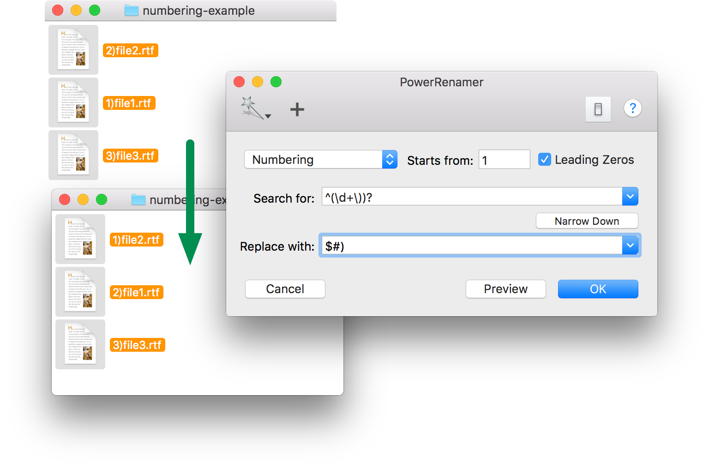
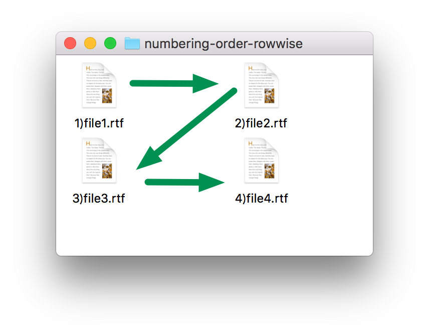
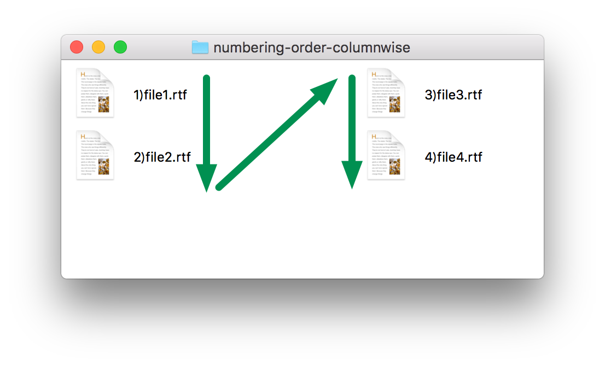

"Numbering" mode of PowerRenamer can insert sequential numbers into file names. The order of numbers are determined by sorting order in Finder (details are described in following section). You can number files as you see.
"Numbering" mode is a special mode of "Regular Expression" mode. The position to be replaced with numbers is specified with "Search for" field using regular expressions. The format of numbers are specified with "Replace with" field. "Replace with" field should contain a special string "$#". "$#" will be replaces with a number. If there is not "$#" in "Replace with" field, "Numbering" mode has no difference from "Regular Expression" mode.

The order of numbers to be inserted to file names is depend on Finder window's view style of selected location. In short, the order of numbering is the same to the order of files in Finder as you see.
When items in a Finder window are arranged by item's attribute, the numbering order follows the attribute order.
When items in a Finder window are not arranged or snapped to grid, the numbering order is determined by item's positions. The direction of numbering order is determined labels position as follows.
|  |
| Row Direction |
|  |
| Column Direction |
The numbering order follows the sorting order in the list view. If sorted by modification date, the numbering order is determined by the modification date.
The numbering order follows the name order as you see in the window.
The order of items listed the preview drawer can be changed by drag & drop. After obtaining Finder's selection, you can modify numbering order.
If you specify files to be renamed by using the service menu or dropping files on the application icon, numbering order is determined by the list order in the preview drawer.